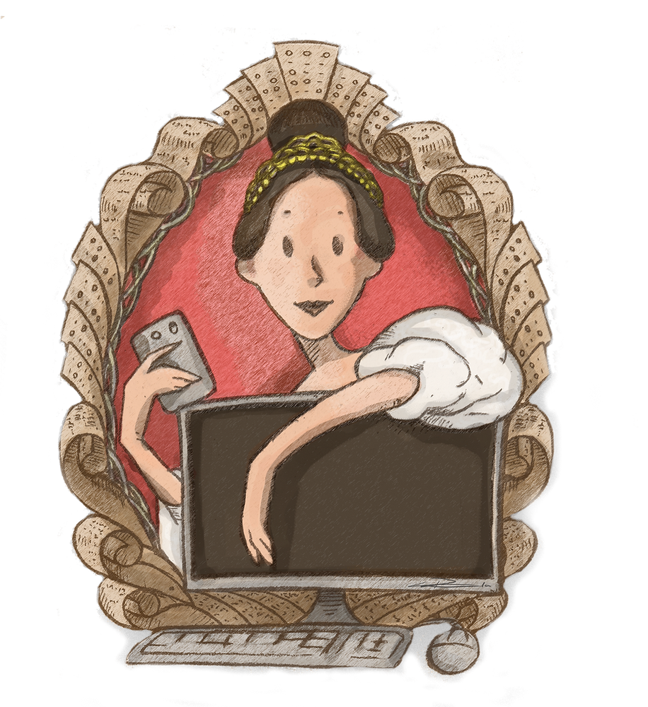

Ada Lovelace (1815-1852) foi uma figura notável na história da ciência da computação, reconhecida como a primeira programadora do mundo. Filha do poeta Lord Byron e da matemática Annabella Milbanke, Ada demonstrou um talento excepcional para a matemática desde jovem. Sua educação rigorosa e orientação por mentores influentes, como o matemático Charles Babbage, moldaram seu intelecto.
Lovelace ficou famosa por seu trabalho com a Máquina Analítica de Babbage, um precursor da computação moderna. Ela traduziu o trabalho de um matemático italiano, Luigi Federico Menabrea, e anexou suas próprias notas explicativas. Essas notas incluíram algoritmos que iam além dos simples cálculos matemáticos, introduzindo conceitos de programação. Ada percebeu que a Máquina Analítica poderia ser usada para além dos cálculos matemáticos, prevendo que ela poderia ser programada para gerar música e arte.
Seu legado perdura como um símbolo de inovação e visão, e o "Dia Ada Lovelace" é comemorado internacionalmente em sua honra. Ada Lovelace deixou uma marca indelével na história da tecnologia, sendo uma inspiração para as mulheres em STEM (Ciência, Tecnologia, Engenharia e Matemática) e para todos aqueles que reconhecem o potencial da tecnologia para transformar o mundo.